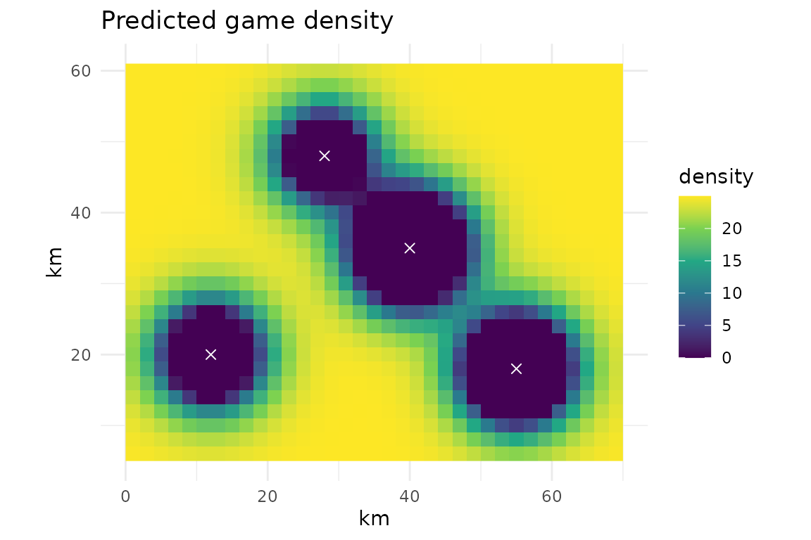

The idea
Model-based methods work the other way round from the index-based ones. Instead of comparing two sites, they use the biology of the species to estimate how many animals can be taken each year without shrinking the population. You then compare that estimate with the offtake you actually observe. If the observed offtake is larger than the estimate, hunting is likely too heavy (Adounke et al. 2026).
The four non-spatial models return the same columns:
-
limit: the estimated safe annual offtake; -
observed: the offtake you gave; -
ratio: the exploitation ratio,observed / limit. Above 1 means too much; 3 means three times too much; -
sustainable:TRUEwhen the observed offtake is at or below the limit.
| Function | Estimates the safe harvest from | Source |
|---|---|---|
ot_pro() |
density, growth rate, lifespan | Robinson & Redford 1991 |
ot_pbr() |
a cautious population size and growth rate | Wade 1998 |
ot_msy() |
the logistic growth curve | Schaefer 1954 |
ot_samse() |
growth, density dependence and year-to-year variability | Manlik et al. 2022 |
ot_biode() |
settlement locations and hunting effort | Levi et al. 2009, 2011 |
We use the bundled example data duiker_demography
(life-history values for a few duikers) and
manu_settlements (hunting villages on a map). Both are made
up for the examples.
duiker_demography
#> species density_k annual_take lifespan b a w rmax n_est
#> 1 blue duiker 40 9.0 10 0.55 1.0 10 0.43 22.0
#> 2 red duiker 12 3.5 11 0.50 1.5 11 0.34 6.5
#> 3 yellow-backed duiker 3 0.8 12 0.45 2.0 12 0.28 1.4
#> n_cv
#> 1 0.25
#> 2 0.30
#> 3 0.40Production model, ot_pro()
This is the most common model in bushmeat studies. The safe harvest, called the production \(P\), is
\[P = 0.6 \, K \, (\lambda_{\max} - 1) \, F.\]
Reading it piece by piece:
- \(K\) is the density the habitat can support (carrying capacity).
- \(0.6\,K\) is the density at which the population is assumed to produce the most surplus.
- \(\lambda_{\max}\) is the fastest yearly growth the species can manage. The part \((\lambda_{\max} - 1)\) is the surplus it adds each year.
- \(F\) is a safety fraction that depends on how long the animal lives: 0.6 for short-lived species (about 5 years), 0.4 for medium-lived (5 to 10 years) and 0.2 for long-lived species (over 10 years). Long-lived animals bounce back slowly, so you take a smaller share.
If you do not have lambda_max, you can let the package
work it out from three life-history numbers using
ot_lambda_max(): the number of female young per female per
year (b), the age at first reproduction (a)
and the age at last reproduction (w). This solves Cole’s
(1954) equation,
\[1 = e^{-r} + b\,e^{-r a} - b\,e^{-r (w + 1)}, \qquad \lambda_{\max} = e^{r}.\]
ot_lambda_max(b = 0.55, a = 1, w = 10)
#> [1] 1.542758Now the model itself. Here we pass the life-history columns, so
lambda_max is computed for us, and we use
lifespan to set the safety fraction \(F\).
ot_pro(duiker_demography,
k = density_k,
harvest = annual_take,
b = b, a = a, w = w,
longevity = lifespan)
#> model-based: Pro (Robinson & Redford production model)
#>
#> # A tibble: 3 × 6
#> lambda_max f limit observed ratio sustainable
#> * <dbl> <dbl> <dbl> <dbl> <dbl> <lgl>
#> 1 1.54 0.4 5.21 9 1.73 FALSE
#> 2 1.41 0.2 0.590 3.5 5.93 FALSE
#> 3 1.32 0.2 0.117 0.8 6.85 FALSEAdding uncertainty
The inputs of these models are rarely known precisely. For the same
species, \(\lambda_{\max}\) from Cole’s
formula and from the Caughley & Krebs equation can differ by up to
four times, and densities depend on the survey method (Adounke et
al. 2026). The uncertainty argument takes a coefficient of
variation for any input. The function then draws each uncertain input
1000 times (lognormal, centred on the value you gave), recomputes the
limit every time, and reports the interval of the limit and
p_unsustainable, the share of draws in which the offtake
exceeds it.
ot_pro(duiker_demography,
k = density_k,
harvest = annual_take,
b = b, a = a, w = w,
longevity = lifespan,
uncertainty = list(k = 0.3, lambda = 0.3, harvest = 0.2),
seed = 1)
#> model-based: Pro (Robinson & Redford production model)
#>
#> # A tibble: 3 × 9
#> lambda_max f limit observed ratio sustainable limit_lo limit_hi
#> * <dbl> <dbl> <dbl> <dbl> <dbl> <lgl> <dbl> <dbl>
#> 1 1.54 0.4 5.21 9 1.73 FALSE 2.00 10.9
#> 2 1.41 0.2 0.590 3.5 5.93 FALSE 0.239 1.18
#> 3 1.32 0.2 0.117 0.8 6.85 FALSE 0.0458 0.245
#> # ℹ 1 more variable: p_unsustainable <dbl>Instead of a plain FALSE, we can now say for example
that the offtake of the blue duiker exceeds its production with a
probability of about 0.9. The same argument works in
ot_pbr() and ot_msy(). A coefficient of
variation can also come from a column, for example
uncertainty = list(k = k_cv).
Potential biological removal, ot_pbr()
ot_pbr() comes from marine mammal management and is
deliberately cautious. The safe removal is
\[\mathrm{PBR} = N_{\min} \times \tfrac{1}{2} R_{\max} \times F_R,\]
where \(N_{\min}\) is a low,
cautious estimate of population size (so you do not over-count), \(R_{\max}\) is the maximum yearly growth
rate, and \(F_R\) is a recovery factor
between 0.1 and 1 that you lower when you want to be extra careful. Give
the current abundance n and its coefficient of
variation cv, and the function works out \(N_{\min}\) as the lower 20th
percentile,
\[N_{\min} = \frac{N}{\exp\!\left(0.842\sqrt{\ln(1 + CV^2)}\right)}.\]
\(R_{\max}\) is a yearly (discrete)
rate, \(\lambda_{\max} - 1\). Our
rmax column is an instantaneous rate, so we convert it on
the fly, which data masking allows:
ot_pbr(duiker_demography,
rmax = exp(rmax) - 1,
removal = annual_take,
n = n_est,
cv = n_cv,
fr = 0.5)
#> model-based: PBR (potential biological removal)
#>
#> # A tibble: 3 × 7
#> nmin rmax fr limit observed ratio sustainable
#> * <dbl> <dbl> <dbl> <dbl> <dbl> <dbl> <lgl>
#> 1 17.9 0.537 0.5 2.40 9 3.75 FALSE
#> 2 5.08 0.405 0.5 0.514 3.5 6.81 FALSE
#> 3 1.01 0.323 0.5 0.0818 0.8 9.78 FALSEMaximum sustainable yield, ot_msy()
This is the classic fisheries benchmark. It assumes the population follows the logistic curve, where growth is fastest at half of carrying capacity and slows as the population fills up,
\[\frac{dN}{dt} = r N \left(1 - \frac{N}{K}\right), \qquad \mathrm{MSY} = \frac{rK}{4}.\]
If you also give the current abundance n, the function
reports the surplus at that abundance too (surplus_at_n),
which is the sustainable yield right now rather than at the ideal
population size.
ot_msy(duiker_demography,
r = rmax,
k = density_k,
harvest = annual_take,
n = n_est)
#> model-based: MSY (logistic maximum sustainable yield)
#>
#> # A tibble: 3 × 7
#> r k limit observed ratio sustainable surplus_at_n
#> * <dbl> <dbl> <dbl> <dbl> <dbl> <lgl> <dbl>
#> 1 0.43 40 4.3 9 2.09 FALSE 4.26
#> 2 0.34 12 1.02 3.5 3.43 FALSE 1.01
#> 3 0.28 3 0.21 0.8 3.81 FALSE 0.209Stochastic safe mortality, ot_samse()
Real environments are not steady. Good years and bad years come and
go, and that variability eats into how much you can safely take.
ot_samse() follows this idea, after Manlik et al. (2022).
It projects the population many times, with growth that slows near
carrying capacity and random good and bad years, taking a fixed number
\(H\) each year,
\[N_{t+1} = \max\!\left(0,\; N_t \exp\!\left[r_{\max}\left(1 - \left(\tfrac{N_t}{K}\right)^{\theta}\right) + \varepsilon_t\right] - H\right), \qquad \varepsilon_t \sim \mathcal{N}(0, \sigma_e).\]
It then searches for the largest \(H\) that keeps the average yearly growth from the current size non-negative, while keeping the risk of extinction at 5% or less. Starting from the current abundance matters: a population already at carrying capacity has almost no surplus to give.
samse_data <- transform(duiker_demography, sd_env = 0.2)
ot_samse(samse_data,
rmax = rmax,
sd_env = sd_env,
removal = annual_take,
n0 = n_est,
k = density_k,
nsims = 300,
seed = 1)
#> model-based: SAMSE (sustainable anthropogenic mortality, stochastic)
#> Note: Count-based re-implementation of the SAMSE principle with density dependence; not the original Vortex-based procedure.
#>
#> # A tibble: 3 × 9
#> n0 k rmax sd_env limit observed ratio sustainable p_extinct
#> * <dbl> <dbl> <dbl> <dbl> <dbl> <dbl> <dbl> <lgl> <dbl>
#> 1 22 40 0.43 0.2 2.84 9 3.17 FALSE 1
#> 2 6.5 12 0.34 0.2 0.635 3.5 5.51 FALSE 1
#> 3 1.4 3 0.28 0.2 0.122 0.8 6.57 FALSE 1p_extinct is the probability that the population goes
extinct within 50 years if the observed removal continues. This is a
simplified version of the original method, which was built in the Vortex
software and includes more biological detail (age structure, demographic
stochasticity). Use it as a careful screen, and cite Manlik et
al. (2022) for the full approach.
Spatial model, ot_biode()
The models above treat the landscape as one pot. In practice hunting
is not spread evenly: it is heavy near villages and light far away.
ot_biode(), after Levi et al. (2009, 2011), captures
this.
Each settlement \(c\) spreads hunting effort around it, strongest close by and fading with distance \(\delta_c\):
\[\varphi(\delta) = \frac{\exp\!\left(-\delta^2 / 2\sigma^2\right)}{2\pi\delta + 1},\]
where \(\sigma\) sets how far hunters roam. With \(P_c\) hunters, \(h\) hunts per hunter per year, an encounter rate \(e\) and a kill probability \(d\), the steady state density at each point of the map is
\[N(x, y) = \left[K^{\theta}\left(1 - \frac{e\,d\,h}{r}\sum_c P_c\,\varphi(\delta_c)\right)\right]_+^{1/\theta}.\]
In words: each settlement presses down on the animals around it, and what the population can still support is whatever is left of its carrying capacity \(K\). The \([\,\cdot\,]_+\) means the density cannot go below zero.
Give the study area with extent (a rectangle) or
boundary (a polygon), so that areas and shares refer to
your real landscape and not to an arbitrary map size.
area <- c(0, 70, 5, 60) # xmin, xmax, ymin, ymax in km
res <- ot_biode(manu_settlements,
x = x_km,
y = y_km,
humans = hunters,
k = 25,
r = 0.07,
hphy = 40,
kill_rate = 0.1,
sigma = 6,
extent = area,
resolution = 2)
res
#> model-based: Biode (Levi et al. spatial model, steady)
#>
#> # A tibble: 1 × 9
#> n_settlements area mean_density min_density area_extirpated frac_extirpated
#> * <int> <dbl> <dbl> <dbl> <dbl> <dbl>
#> 1 4 3920 17.4 0 624 0.159
#> # ℹ 3 more variables: frac_below_half_k <dbl>, cpue <dbl>, sustainable <lgl>The summary reports the study area (km²), the
area_extirpated and its share frac_extirpated,
and cpue, the expected number of kills per hunt. The full
predicted surface is available with ot_biode_surface(),
ready for mapping, and the catch per unit effort of each village is in
ot_biode_cpue().
ot_biode_cpue(res)
#> # A tibble: 4 × 5
#> settlement x y humans local_cpue
#> <int> <dbl> <dbl> <dbl> <dbl>
#> 1 1 12 20 60 0.00884
#> 2 2 40 35 110 0.00419
#> 3 3 55 18 90 0.00395
#> 4 4 28 48 45 0.00900If you have ggplot2 installed, the surface maps nicely as a raster, with the depletion halos around the settlements.
library(ggplot2)
surface <- ot_biode_surface(res)
ggplot(surface, aes(x, y, fill = density)) +
geom_raster() +
geom_point(data = manu_settlements,
aes(x_km, y_km), inherit.aes = FALSE,
colour = "white", shape = 4, size = 2) +
scale_fill_viridis_c(name = "density") +
coord_equal() +
labs(title = "Predicted game density", x = "km", y = "km") +
theme_minimal()
With animal movement
The steady-state formula balances growth and hunting cell by cell,
without animals moving between cells. method = "dynamic"
runs the time-stepped version of the model (Levi et al. 2011) instead:
each year some animals move to the neighbouring cells
(dispersal), so remote, lightly hunted areas resupply the
hunted ones. This is the source-sink effect.
ot_biode(manu_settlements,
x = x_km,
y = y_km,
humans = hunters,
k = 25,
r = 0.07,
hphy = 40,
kill_rate = 0.1,
sigma = 6,
extent = area,
resolution = 2,
method = "dynamic")
#> model-based: Biode (Levi et al. spatial model, dynamic)
#>
#> # A tibble: 1 × 9
#> n_settlements area mean_density min_density area_extirpated frac_extirpated
#> * <int> <dbl> <dbl> <dbl> <dbl> <dbl>
#> 1 4 3920 17.7 0.00111 288 0.0735
#> # ℹ 3 more variables: frac_below_half_k <dbl>, cpue <dbl>, sustainable <lgl>With movement, the extirpated area shrinks, because immigrants keep refilling part of the hunted zones.
Comparing the models
Because the non-spatial models share the same columns, their results are easy to put side by side. The exploitation ratio is the most useful number to compare, since it says how far above or below its limit each species is.
dd <- dplyr::group_by(duiker_demography, species)
dplyr::bind_rows(
production = ot_pro(dd, k = density_k, harvest = annual_take,
b = b, a = a, w = w, longevity = lifespan),
pbr = ot_pbr(dd, rmax = exp(rmax) - 1, removal = annual_take,
n = n_est, cv = n_cv),
msy = ot_msy(dd, r = rmax, k = density_k, harvest = annual_take),
.id = "model"
)[, c("model", "species", "limit", "observed", "ratio", "sustainable")]
#> model-based: Pro (Robinson & Redford production model)
#>
#> # A tibble: 9 × 6
#> model species limit observed ratio sustainable
#> <chr> <chr> <dbl> <dbl> <dbl> <lgl>
#> 1 production blue duiker 5.21 9 1.73 FALSE
#> 2 production red duiker 0.590 3.5 5.93 FALSE
#> 3 production yellow-backed duiker 0.117 0.8 6.85 FALSE
#> 4 pbr blue duiker 2.40 9 3.75 FALSE
#> 5 pbr red duiker 0.514 3.5 6.81 FALSE
#> 6 pbr yellow-backed duiker 0.0818 0.8 9.78 FALSE
#> 7 msy blue duiker 4.3 9 2.09 FALSE
#> 8 msy red duiker 1.02 3.5 3.43 FALSE
#> 9 msy yellow-backed duiker 0.21 0.8 3.81 FALSEWhich one to use
There is no single best model. The production model is a good default when you have density and basic life-history. PBR is handy when you mostly trust a population count and want to stay cautious. MSY is familiar from fisheries. SAMSE is worth reaching for when year-to-year swings matter. Biode is the one to use when the spatial pattern of hunting is the whole point. In practice it helps to try more than one, add the uncertainty you know of, and see whether they agree.
References
Adounke, G. R. M. et al. (2026) Systematic review of sustainability assessment approaches for wildlife exploitation. Biological Conservation 313, 111606.
Cole, L. C. (1954) The population consequences of life history phenomena. The Quarterly Review of Biology 29, 103 to 137.
Levi, T., Shepard, G. H., Ohl-Schacherer, J., Peres, C. A. & Yu, D. W. (2009) Modelling the long-term sustainability of indigenous hunting in Manu National Park, Peru. Journal of Applied Ecology 46, 804 to 814.
Levi, T., Shepard, G. H., Ohl-Schacherer, J., Wilmers, C. C., Peres, C. A. & Yu, D. W. (2011) Spatial tools for modeling the sustainability of subsistence hunting in tropical forests. Ecological Applications 21, 1802 to 1818.
Manlik, O. et al. (2022) A stochastic model for estimating sustainable limits to wildlife mortality in a changing world. Conservation Biology 36, e13897.
Robinson, J. G. & Redford, K. H. (1991) Sustainable harvest of Neotropical forest mammals.
Schaefer, M. B. (1954) Some aspects of the dynamics of populations important to the management of the commercial marine fisheries. Bulletin of the Inter-American Tropical Tuna Commission 1, 27 to 56.
Wade, P. R. (1998) Calculating limits to the allowable human-caused mortality of cetaceans and pinnipeds. Marine Mammal Science 14, 1 to 37.